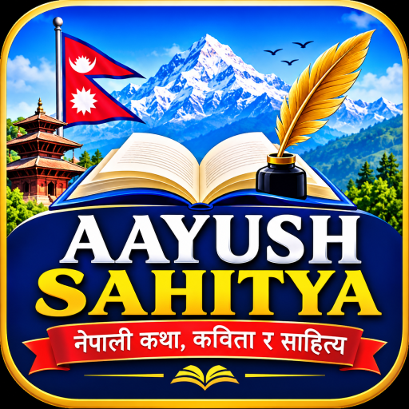

🧒📚
बाल साहित्य
बालबालिकाका लागि रमाइला कथा, कविता, ज्ञान र नैतिक सन्देश।
बाल साहित्य पढ्नुहोस् →
नेपाली कथा, कविता, बाल साहित्य र साहित्यको डिजिटल संसार
पढौँ • लेखौँ • सिकौँ • सिर्जना गरौँ
नेपाली भाषा, साहित्य, संस्कृति र सिर्जनालाई डिजिटल माध्यमबाट सबै पाठकसम्म पुर्याउने साझा प्रयास। आफूलाई मन परेको विधा छानेर पढ्न सुरु गर्नुहोस्।
बालबालिकाका लागि रमाइला कथा, कविता, ज्ञान र नैतिक सन्देश।
बाल साहित्य पढ्नुहोस् →महान व्यक्तिहरूको जीवन, संघर्ष, उपलब्धि र योगदानका प्रेरक प्रसंग।
जीवनी पढ्नुहोस् →भावना, प्रकृति, देशप्रेम र जीवनका विविध विषयका कविता।
कविता पढ्नुहोस् →मनोरञ्जन, कल्पना, अनुभव र जीवनोपयोगी सन्देश बोकेका कथा।
कथा पढ्नुहोस् →शिक्षा, समाज, प्रकृति, विज्ञान र जीवनका विविध विषयमा निबन्ध।
निबन्ध पढ्नुहोस् →रामायणका सात काण्ड र आदर्श जीवनका प्रेरणादायी प्रसंग।
रामायण पढ्नुहोस् →श्री हनुमान चालीसाको पाठ र श्रवण सुविधा।
हनुमान चालीसा खोल्नुहोस् →नेपाली भाषा र साहित्यको संरक्षण, सम्बर्द्धन तथा प्रवर्द्धन गर्नु; नयाँ पुस्तामा पढ्ने, लेख्ने र सिर्जना गर्ने बानीको विकास गर्नु; र पाठक तथा लेखकबीच साहित्यिक सम्बन्ध स्थापित गर्नु हाम्रो लक्ष्य हो।
Founder & Developer: Aayush Jaishi
आयुष नेपाली साहित्य केवल सामग्री राख्ने वेबपेज होइन; नेपाली भाषा, साहित्य, संस्कृति, ज्ञान र सिर्जनशीलतालाई डिजिटल माध्यमबाट व्यवस्थित रूपमा प्रस्तुत गर्ने प्रयास हो। पाठकले उमेर, रुचि र अध्ययनको आवश्यकताअनुसार बाल साहित्यदेखि गम्भीर निबन्ध, जीवनी, कथा, कविता, रामायण र हनुमान चालीसासम्म सामग्री एउटै स्थानबाट भेट्टाउन सक्ने गरी संरचना बनाइएको छ।
यस परियोजनाको मुख्य विचार पढ्ने बानीलाई सहज बनाउनु, नेपाली सामग्रीलाई मोबाइल तथा कम्प्युटर दुवैमा आरामसँग पढ्न मिल्ने बनाउनु र भविष्यमा थप सामग्री विस्तार गर्न सकिने आधार तयार गर्नु हो। विषयवस्तु थपिँदै जाँदा खोज, वर्गीकरण, पढ्ने शैली, मनपर्ने सामग्री र नयाँ विभागहरू पनि थप्न सकिने गरी डिजाइन गरिएको छ।
विस्तृत सन्देश: ज्ञान तब अझ उपयोगी हुन्छ जब त्यो सजिलै पहुँचयोग्य, व्यवस्थित र पढ्न प्रेरित गर्ने रूपमा प्रस्तुत हुन्छ। यही सोचअनुसार यहाँको प्रत्येक पृष्ठलाई फरक साहित्यिक विधाका लागि छुट्टै स्थान दिइएको छ।